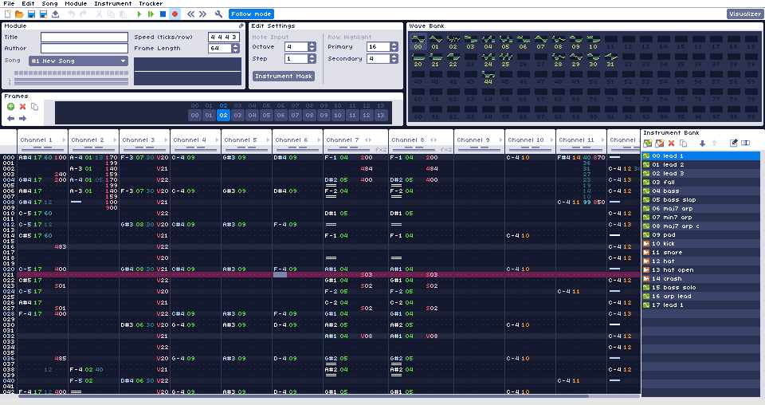

Overview
This is the official documentation for WaveTracker. WaveTracker is a tracker for making chiptune-like music, which can then be exported to .wav format.
Features
- Realtime playback and editing
- Draw and edit up to 100 waveforms
- Up to 100 instrument macros to control various aspects of the sound
- Sample importing and editing
- MIDI input
- Export to .wav
- Built in oscilloscope and piano roll visualizer
Help Topics
For more information, see the topics below:
- Toolbar
- Module Panel
- Edit Settings
- Frames Panel
- Wave Bank
- Instrument Bank
- Instrument Editor
- Pattern Editor
- Preferences
- Visualizer Mode